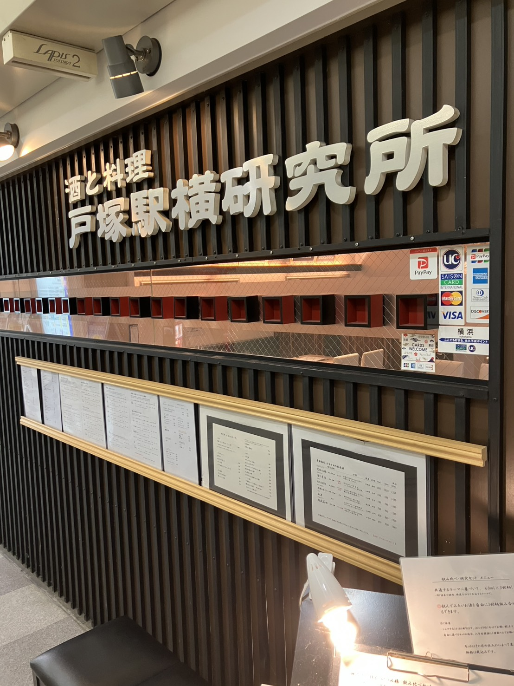
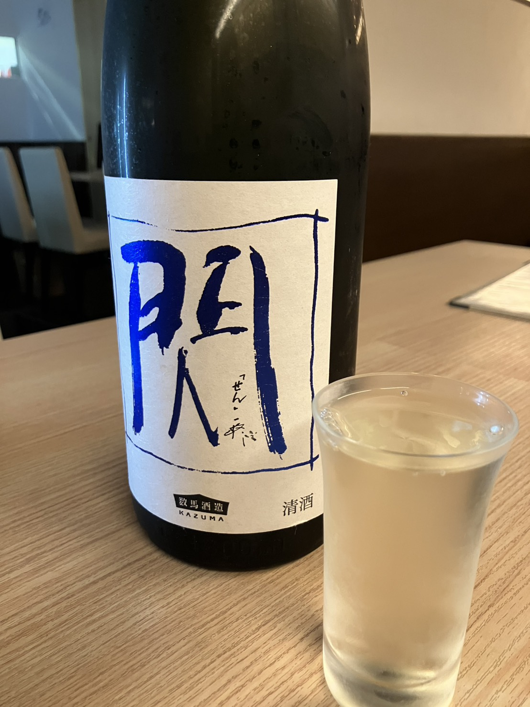
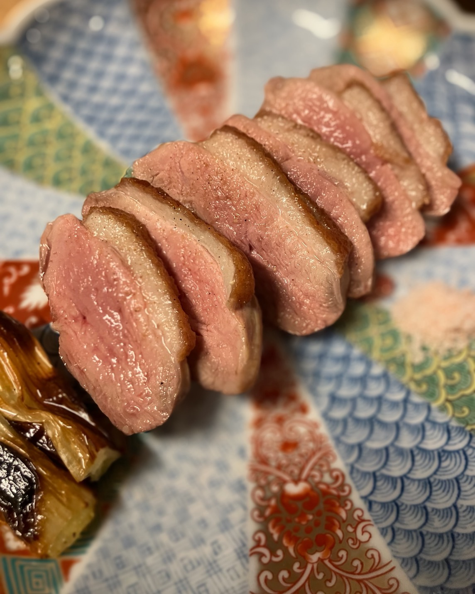
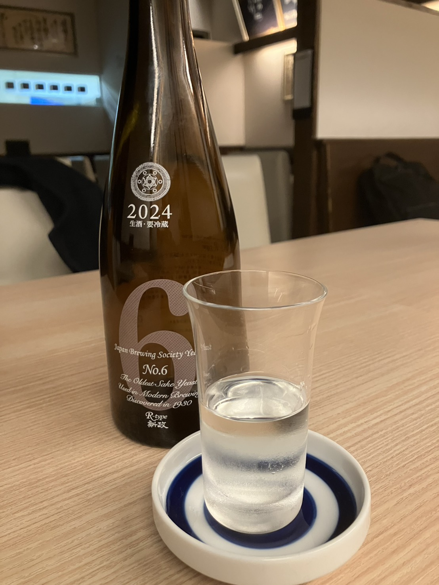
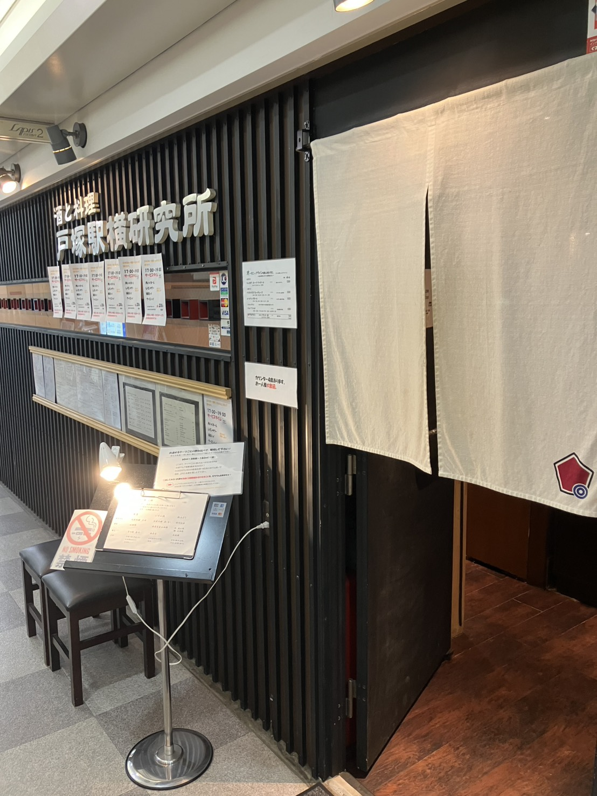

全国70種以上
の銘柄
北は北海道から南は九州まで、 個性豊かな蔵元の銘柄を厳選。 純米大吟醸から個性的な地酒まで、 あなた好みの一本が見つかります。

単に「飲む」だけでなく、造り・米・地域・味わいの違いを 店主の解説とともに理解しながら楽しむ—— そんな「学びのある一杯」を提供する体験型の日本酒専門店です。 割烹で培った料理の技術と、全国から厳選した銘柄が、 あなたの日本酒の世界を広げます。
北は北海道から南は九州まで、 個性豊かな蔵元の銘柄を厳選。 純米大吟醸から個性的な地酒まで、 あなた好みの一本が見つかります。
「同じ米でも蔵が違えば味が変わる」 「精米歩合による香りの差」など、 店主の解説付きで楽しむテーマ別の 飲み比べセットをご用意しています。
割烹で腕を磨いた店主が作る季節の料理は、 日本酒の味わいを引き立てる 絶妙なペアリングを意識して構成。 酒と肴の相乗効果を体感できます。
北海道から九州まで、個性豊かな蔵元を厳選。 純米・純米吟醸・純米大吟醸を中心に、 食中酒として最高の一本をご提案します。
他、季節の限定銘柄、希少な原酒など随時入荷。
詳細は店頭またはInstagramにてご確認ください。
お酒のテーマを決めて、60ml × 3種を 飲み比べる当店の看板メニュー。
醸造方法や共通した酒造好適米といったテーマ毎の飲み比べ3種を、 店主が一つひとつ解説しながらご提供します。 各銘柄の個性の違いを楽しめます。
ご予約についてテーマに沿った3種を60ml×3杯で。 初めての方や、まず試してみたい方に。




酒と料理 戸塚駅横研究所
〒244-0003
神奈川県横浜市戸塚区戸塚町８
ラピス戸塚2 B1F
JR・横須賀線・東海道線・湘南新宿ライン
戸塚駅 徒歩1分
詳細はInstagramにてご確認ください
インスタのプロフィール欄にあるURLからか、お電話にて承ります